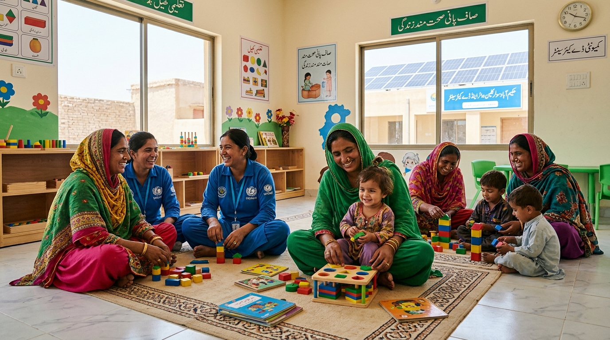
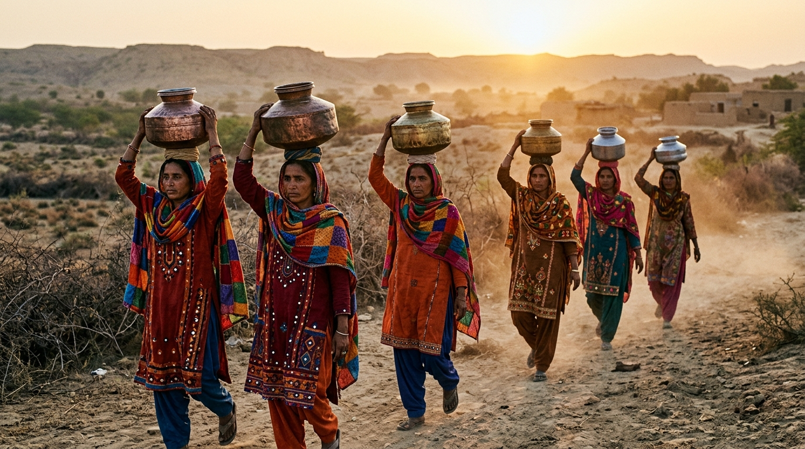

STEP 1: SELECT A STRATEGIC POLICY PATHWAY
The Four Competing Executive Interventions
Click any of the four pathways below to trigger the live cause-and-effect cascade.
PATHWAY 1 : TRANSFORMATIONAL
Full National Roshni Hubs
PKR 142B outlay | 4,200 solar water & daycare centers across all 134 districts.
PATHWAY 2 : PRAGMATIC COMPACT
60/40 Phased Provincial Pilot
PKR 28B outlay | 800 hubs in 3 priority provinces, matching provincial land.
PATHWAY 3 : MARKET / PPP MODEL
Corporate Industrial Crèches
PKR 12B tax breaks + PKR 90B private capital | Urban manufacturing daycares.
PATHWAY 4 : AUSTERITY STATUS QUO
Cash Transfers Without Hubs
PKR 30B one-off cash handouts | Zero physical infrastructure | IMF compliant.
PATHWAY 1 CASCADE ANALYSIS
The Ripple Chain: Full National Roshni Hubs
1
IF THEY DO THIS [ACTION]
Deploy 4,200 Solar Care Hubs
Federal government enacts emergency decree committing PKR 142B over 3 years. Rapid fabrication of solar water filtration pumps and community crèches.

COST: PKR 142B | TIME: 18 MONTHS
2
THEN THIS HAPPENS [1ST ORDER]
Direct Time Poverty Relief
2.14 Million rural women immediately save 2.5 hours per day from carrying water pots. 890,000 young girls re-enroll in primary school as care duties diminish.

BENEFICIARIES: 2.14M WOMEN FREED
3
THEN THIS FOLLOWS [2ND ORDER]
Labor Elasticity Activates
Dr. Fareeha's elasticity parameter (ε = -0.35) triggers: 1.62M mothers transition into formal agri-processing, textiles, and local cottage enterprises. Household cash income jumps 28%.

FEMALE WORKFORCE: +7.2% SURGE
4
MULTIPLE RESULTS [3RD ORDER]
Macroeconomic & Political Outcome
GDP expands by +PKR 3.02 Trillion (+2.85%). Federal tax receipts rise by PKR 380B, making the program fully self-funding by Month 26. Pakistan rises 18 spots on Gender Gap.
NET MACRO: +PKR 3.02T GDP GAIN
HARVARD CROSS-IMPACT EVALUATION GRID
Side-by-Side Multi-Option Decision Matrix
Comprehensive comparative scorecard across all 8 multi-dimensional executive criteria.
| EVALUATION CRITERIA | PATHWAY 1: FULL NATIONAL ROLLOUT | PATHWAY 2: 60/40 PROVINCIAL PILOT | PATHWAY 3: PRIVATE SECTOR PPP | PATHWAY 4: AUSTERITY CASH HANDOUTS |
|---|---|---|---|---|
| 1. Upfront Capital Cost | PKR 142 Billion High upfront, self-funding in 26mo. |
PKR 28 Billion Modest, fits within current fiscal space. |
PKR 12B State / 90B Private Offloads 88% of cost to businesses. |
PKR 30 Billion Recurring operational cash drain. |
| 2. Time Freed per Woman | 2.5 to 4.1 Hours / Day Clean piped water + infant daycare. |
1.8 Hours / Day Limited to pilot districts only. |
1.5 Hours / Day Factory workers only; 0 rural water relief. |
ZERO Hours Saved Cash spent on food; drudgery unchanged. |
| 3. Female Labor Supply (ε = -0.35) | +7.2% Female LFP 2.14M women enter formal workforce. |
+1.8% Female LFP 420K women enter formal workforce. |
+1.4% Female LFP Restricted to urban export manufacturing. |
0.0% LFP Change Women remain unpaid domestic laborers. |
| 4. 3-Year Macro GDP Growth | +PKR 3.02 Trillion (+2.85%) Massive national growth dividend. |
+PKR 680 Billion (+0.64%) Solid localized pilot gains. |
+PKR 1.18 Trillion (+1.10%) Concentrated in textile sector. |
+PKR 45B (Transitory 0.04%) Negligible long-term multiplier. |
| 5. IMF EFF Deficit Risk | HIGH RISK (Audit Flag) Requires bilateral currency rollover. |
LOW RISK (100% Compliant) Stays under 0.4% deficit cap. |
ZERO RISK Private capital investment. |
ZERO RISK IMF praises fiscal austerity. |
| 6. 18th Amendment Friction | MODERATE (Requires CCI Pact) Federal leadership with provincial matching. |
MINIMAL Provinces voluntarily co-sign compact. |
ZERO Private corporate transactions. |
HIGH RESENTMENT Provinces complain of missed development. |
| 7. Grassroots Dignity & Poverty | TRANSFORMATIONAL Eliminates water pots for 8.94M women. |
PARTIAL RELIEF Excludes 4.1M informal women. |
INEQUALITY WIDENS Rural women left behind in poverty. |
TEMPORARY TOKENISM Inflation eats cash within 75 days. |
| 8. 18-Month Electoral Polling | +6.5% Coalition Surge Visible tangible village assets. |
+1.2% Modest Bump Non-pilot districts feel neglected. |
-1.5% Opposition Attack Opposition brands it "elite cronyism". |
-4.0% Long-Term Drop Voters realize cash did not fix drudgery. |
REAL-TIME ECONOMETRIC ENGINE
Dynamic "What-If" Policy Lever Simulator
Adjust the policy levers live to simulate instant cause-and-effect recalculations on national GDP, labor supply, and fiscal deficit.
Policy Input Levers
Tweak executive budget, provincial matching, and cultural incentives live:
1. Total Infrastructure Investment (PKR Billions)
PKR 142 Billion
2. Rural Priority Allocation Share (%)
75% Rural
3. Provincial Matching Grant Share (%)
40% Provincial
4. Male Household Agriculture Incentive (%)
80% Tractor/Fertilizer Vouchers
WOMEN FREED FROM WATER DRUDGERY
2,140,000
Direct Care Beneficiaries
DAILY TIME FREED PER HOUSEHOLD
3.2 Hours
Redirected into Income & Learning
PROJECTED 3-YR GDP EXPANSION
+PKR 3.02T
National Economic Dividend
IMF DEFICIT RISK STATUS
MODERATE SAFE
Net Fiscal Deficit: +0.08%
DOCUMENTARY ARCHIVE
19 Real-Life Photographic Assets of the Care Crisis
Authentic photojournalism of Pakistan's cabinet war rooms, rural water burdens, IMF negotiations, and care workers.